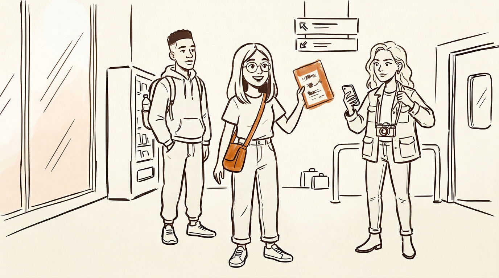
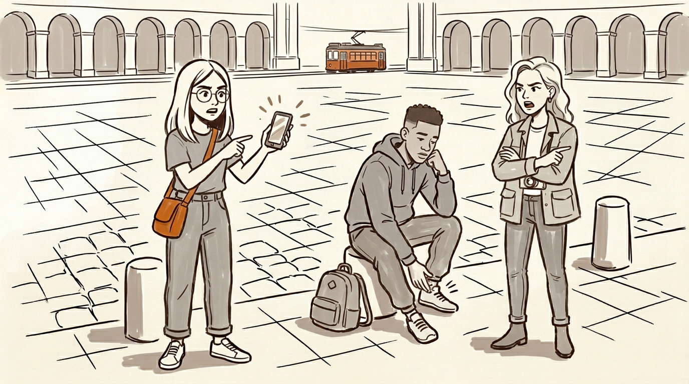
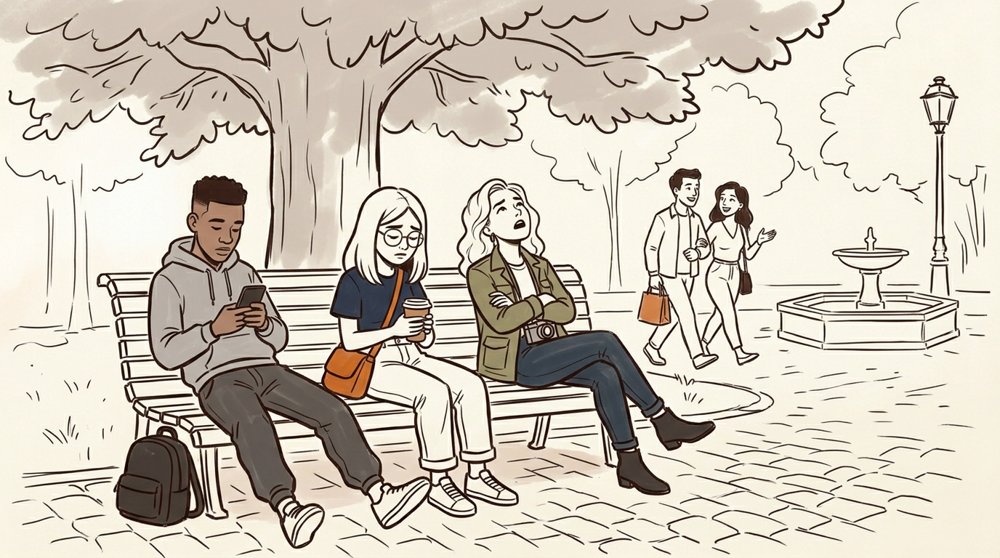
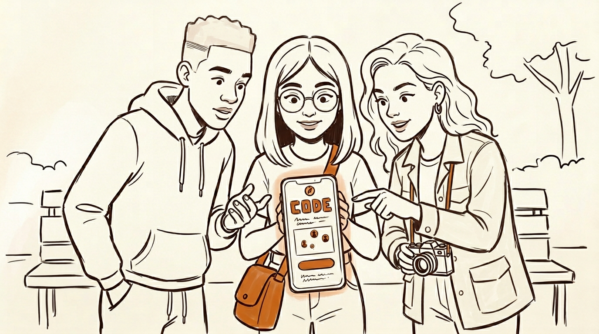
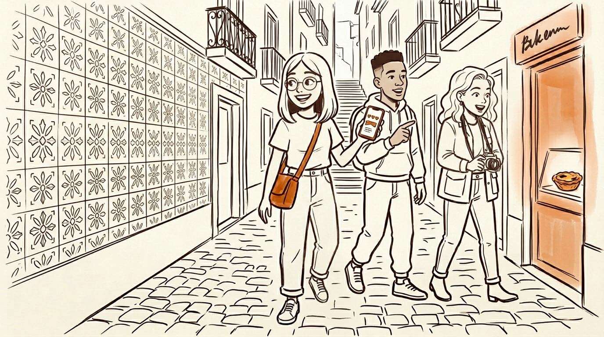
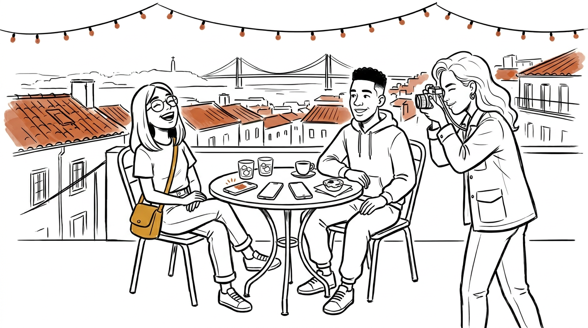

CSEN 174 · Week 3
Repo Setup, Storyboard & Divergent Prototype
Orbit Together
A divergent prototype of the team product Orbit —
reimagined as a shared, multi-person session for small
friend groups who can't agree on what to do next.
Persona
Priya Sharma — and her trip with Marcus and Leah
Priya, 24, first job out of school,
first time abroad with friends — the friend with the color-coded Google
Doc and the backup weather PDF. She's traveling with
Marcus (her tired, hungry, decision-averse college
roommate) and Leah (a picky foodie allergic to anything
that looks like it has a TripAdvisor sticker on the door). It's day one
of their long weekend in Lisbon. Her plan is about to collide with
reality, and her group is the unit Orbit Together is built for.
Prototype description (Part 3)
Direction: Orbit as a shared, multi-person session
All four other teammates built Orbit as a solo traveler
experience (single-user map, single-user audio narration). My prototype,
Orbit Together, takes the same product vision but
reframes it as a group coordination tool: 2–5 friends
join one room with a 4-character code, each contributes interests and a
one-line vibe, and Orbit surfaces 4–5 nearby spots with a personal
"why YOU" line per member; per-person ❤️ / 🤔 / 👎 reactions
surface consensus naturally, and a Groq-generated narration addresses
the whole group by name when they pick a destination.
This explores a different flow of information (shared
session state, per-member tailoring, group consensus) that none of my
teammates touched — Kieran built a single-user map explorer, Daniel a
single-user phone-mockup audio guide, Rosalie a single-user listen-first
flow, and GP a single-user pin-and-cards discovery. The unit of use is
the change, not the surface details.
Stack: FastAPI (port 8030) + SQLite + Groq
llama-3.3-70b-versatile backend; Vite + React 19 +
react-leaflet (port 5176) frontend; browser Web Speech API for narration.
Includes a one-tap "Be Priya / Marcus / Leah" demo persona shortcut so a
lone presenter at the gallery walk can show the multi-user experience
from a single laptop. Full setup & demo script in
prototypes/iker/README.md.
Storyboard (Part 2)
6-frame arc · low-fidelity sketch series
Generated as a cohesive panel series with a warm monochrome palette and
one terracotta accent reserved for emotional highlights and the Orbit
app interface. A character reference (frame 1) was generated first, then
used as a consistency reference for frames 2–6 — the same technique the
assignment recommends for Nano Banana.
Frame 1 — Meet the trio
01 / 06 · Main Character

Airport arrivals, Lisbon. Priya holds a printed itinerary in a plastic
sleeve, already in planner mode. Marcus drifts toward a vending machine.
Leah scrolls a Reddit thread about hidden pastéis de nata. They're
excited — but their three versions of the trip are already pulling apart.
Frame 2 — The problem emerges
02 / 06 · Problem

Praça do Comércio, 3 PM, day one. They've walked four hours. Three phones
come out — Priya on Maps, Marcus on Yelp, Leah on a travel blog. Three
apps, three answers, none of them know them. Fifteen minutes
pass with nothing decided. The sun is moving.
Frame 3 — The "oh crap" moment
03 / 06 · Escalation

Slumped on a bench in Jardim do Príncipe Real. A happy couple walks past
with a bag from a shop none of them saw on any list. Priya realizes the
good parts of traveling with friends are happening to strangers — and
it's only been four hours. The group chat is about to become a group
fight.
Frame 4 — The solution appears
04 / 06 · Solution

Same bench, one phone. Priya opens Orbit Together: one map, one code,
everyone joins from their own phone with their own interests. Marcus
types in the four-character code while pretending not to be interested.
Three avatars pop onto a shared map. They lean in.
Frame 5 — The "aha" moment
05 / 06 · Breakthrough

Five spots surface, each card written to each of them by name:
Leah's locals' pastel de nata, Marcus's quick-queue cervejaria, Priya's
1870s bookstore. Three hearts converge on Manteigaria. Orbit reads one
short line as they stand up — "Counter seats beat the table, trust
me" — and they laugh, for real, and start walking.
Frame 6 — Life after
06 / 06 · Outcome

Rooftop bar, end of day one. All three phones face-down on the table.
Priya's doc is closed. Leah is taking a picture of them, not
the view. The Orbit session quietly saves the day's pins as a shared
trip recap. For the rest of the weekend, "what do we do now?" takes ten
seconds, not forty minutes.